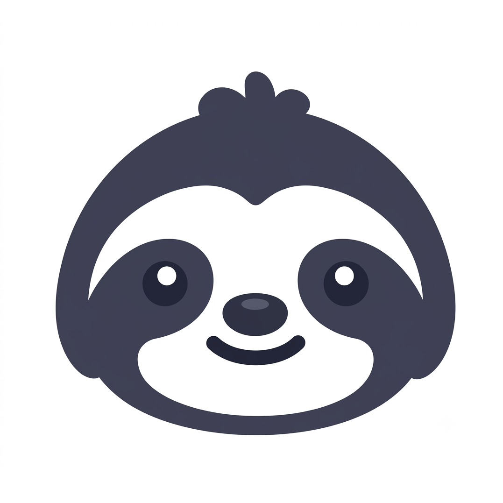
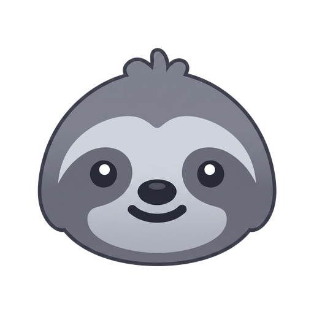

Same base screen (sloth + title + radial tint, as now shipped), agents woven in: Claude · Codex · agy · Gemini · Cursor · Copilot. Toggle theme top-right.
1 · Agent planets
Sloth as the sun: two counter-rotating dashed orbits, agents as planets with upright labels. Real build: each planet fades in when its detector reports.


Context Bar
connecting agents · 4 of 6
2 · Agent arch
Agents form a rainbow arch over the sloth, each lighting from gray to color in sequence — arch completes = boot done. Calm, symmetrical, reads as "under one roof".
Context Bar
raising the arch · 3 of 6 agents
3 · Carousel ring
Fake-3D merry-go-round: agents circle the sloth in depth — big and bright up front, small and dim behind. One badge per quarter phase; feels dimensional with zero WebGL.
Context Bar
gathering your agents…
4 · Gravity well
Agents spiral inward from the edges and get absorbed by the sloth — pulled into orbit, then home. Ripple rings pulse outward from the logo. Boot = everything converging on Context Bar.
Context Bar
pulling everything into orbit…